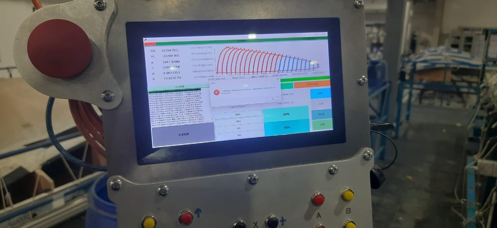

Custom CNC software and hardware integration for precise large-scale gantry operations.

Developed a large-scale 5-axis CNC gantry robot for North Sails, capable of high-precision machining with millimeter-level accuracy. The project involved full-stack custom software development, advanced motion control, and hardware integration for large-scale industrial operations.
The CNC system utilized Teknic Clear Path SD Motors with advanced SDK support, enabling jerk-free motion, coordinate lerping, and smooth trajectory planning. A LattePanda single-board computer was implemented as a teach pendant to run the custom .NET-based CNC software, providing a fully integrated operator interface.
Developed custom CNC control software using the .NET Framework to manage 5-axis gantry operations, enabling precise trajectory planning and motion profiles.
Integrated Teknic Clear Path SD motors using SDK, achieving high-performance motion control and synchronization across all axes.
Implemented a LattePanda single-board computer as a teach pendant to run CNC software, allowing interactive control and parameter adjustments.
Performed panel board wiring and ensured quality assurance through extensive testing and calibration of the CNC gantry system.
Developed a fully custom software solution for multi-axis gantry control with advanced motion profiles.
Implemented Teknic SD Motors and LattePanda SBC for a complete hardware-software integration solution.
Completed panel wiring, QA, and calibration, delivering a high-precision, large-scale CNC gantry system.